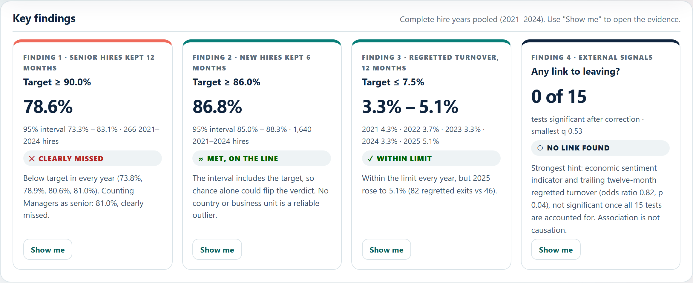
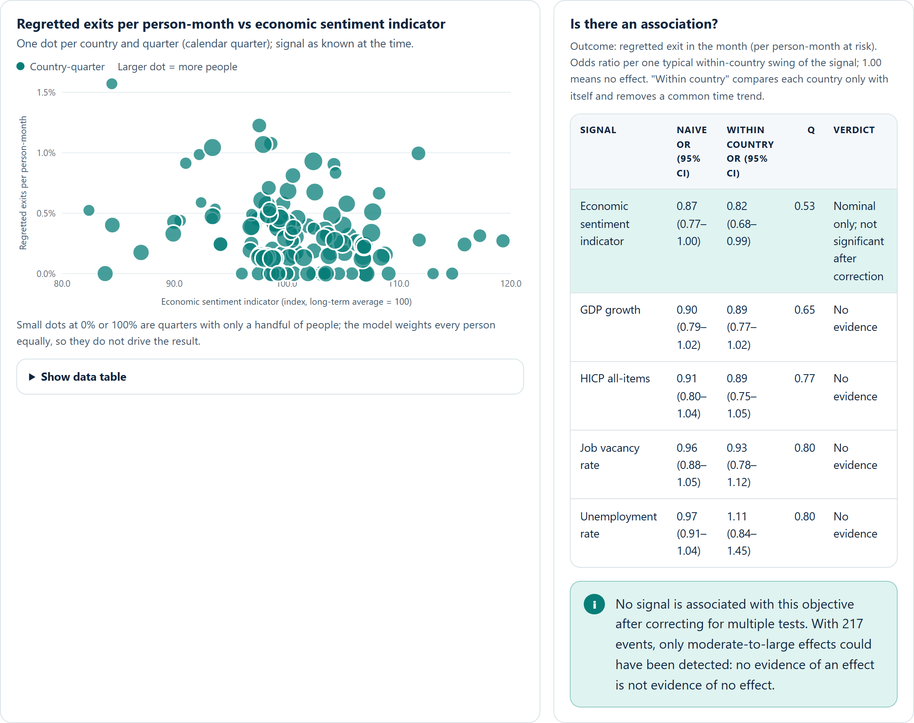
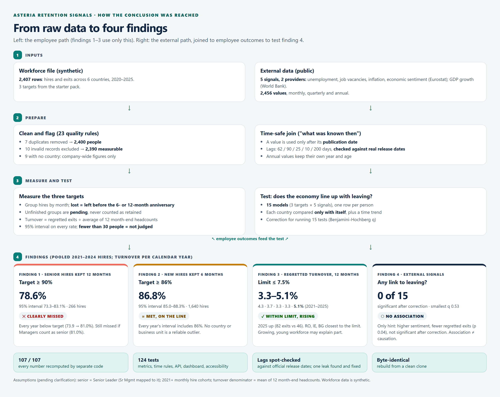

Agentic engineering assessment · software emphasis
External signals ×
workforce retention
Asteria Consumer Products (fictional). How three retention targets are performing, and whether the economy adds useful context.
One command, runs offline5 public signals, 2 providers
129 automated testsEvery number re-derived: 107 / 107
Youssef Alsaeed
Opening (15s). One sentence on what this is: a small, defensible data product, not just a dashboard. Then go straight into how I narrowed the question.
1Problem refinement and scope3 min
The question, narrowed
Decision supported: which retention target needs leadership attention, and does the economy explain it?
| Target | Goal | How I defined it |
|---|
| New hires kept 6 months | ≥ 86% | Hires grouped by month from Jan 2021; "lost" = left before the 6-month anniversary. Only counted once hire + 6 months ≤ 31 Dec 2025; otherwise not yet observable, never "retained" |
| Senior hires kept 12 months | ≥ 90% | Same rule over 12 months, Senior Leader only ("Sr Mgmt" normalised to it; Managers only as a sensitivity check) |
| Regretted turnover, trailing 12 months | ≤ 7.5% | Regretted exits ÷ mean of the 12 month-end active headcounts |
(75s) The brief grades narrowing. Each target hides a definition choice: who is in the group, when the result can be judged, and what the denominator is. Unfinished groups are shown as not yet observable, never counted as retained. If asked: the three definitions were confirmed in the clarification round, and the senior finding holds with or without Managers.
1Problem refinement and scope3 min
The data is deliberately imperfect: nothing is dropped silently
23 quality rules, each with a severity that decides the row's fate. Counts reconciled with an independent profiling script.
| Issue found | Rows | What happened |
|---|
| Exact duplicates | 7 | Removed |
| Country "EL" / "ROM" | 8 | Mapped to GR / RO (EL is Eurostat's own code) |
| Blank country | 9 | Company-wide figures only |
| "Sr Mgmt" level | 10 | Normalised to Senior Leader (confirmed) |
| No hire date / left before hired | 5 + 5 | Excluded from all measures |
| Exit with no exit type | 13 | Counted as an exit, never as regretted |
| "End of Contract" on a Permanent | 90 | Kept, flagged |
| Voluntary exit, regretted unknown | 2 | Not regretted |
2,407 → 2,400 → 2,390
rows read → people → measurable. 2,381 have a known country.
The trap: recent hires
Someone hired in October 2025 hasn't had 6 months yet. Counting them as "stayed" would inflate retention, so their group is not yet observable. That's why every hire-based headline covers 2021–2024.
Also found
Nobody was hired before 2020, so headcount grows from 0 to ~1,600, which matters for reading turnover trends.
In plain wordsWe never quietly delete a messy row: each problem has a rule, and every rule's count is published.
(90s) Emphasise "profile before trusting": my agent's first defect list came from reading the generator code; profiling corrected three overstatements and found the 90 End-of-Contract rows it missed. Censoring is the main analytical trap in this brief.
2Architecture, lineage, reliability5 min
One vertical slice, one command: uv run asteria run
Each stage is a separate module with its own tests; the core runs offline from committed snapshots in about 20 seconds.
Researchdocs/source_register.md5 signals, 4 lenses, 2 providers (Eurostat, World Bank), CC BY 4.0. Every dataset code checked on the live API.
Ingestsources/ · ingest/One adapter per provider behind one interface. Timeouts, retries, contract checks. Byte-exact snapshots and offline replay.
Curatecurate/sql/*.sqlPlain SQL in DuckDB. Canonical countries and periods, 23 quality rules, a quality gate that fails the run.
Analyseanalytics/Target measures with 95% intervals, time-safe signal join (ASOF JOIN), 15 logistic models.
Explainapi/ · dashboard/FastAPI read-only service and an accessible HTML/SVG dashboard. No build step, no CDN.
Adapters
Adding a provider = one class with build_request and parse, plus config. No pipeline changes.
Domain boundaries
Objective rules and targets in domain/ with no I/O; targets read from the starter file, never restated.
Configuration
Indicators, lags, aliases, definitions in config/*.yaml, validated at start-up with clear errors.
(75s) Walk left to right. For software emphasis stress the adapter interface, the domain layer without I/O, and config-driven behaviour. If asked, open src/asteria/sources/base.py to show the Protocol.
2Architecture, lineage, reliability5 min
Lineage: every value can be traced back to its source bytes
| Layer | Where | What it holds | Proof it's faithful |
|---|
| Raw | data/raw-or-fixtures/ | Starter CSVs + API payloads, exactly as received | SHA-256 per file, checked by tests; .gitattributes stops line-ending edits |
| Source-shaped | DuckDB stg_* | Provider codes and period strings, untyped | Parsed only after a contract check (schema drift is an error) |
| Canonical | employees, external_observations | ISO countries, real period dates, quality flags | Lineage columns: source, dataset, period, loaded_at, snapshot sha |
| Analytical product | mart_* | Rates + intervals per country × unit × period; signals as known at the time; model results | Recomputed by separate code: 107 / 107 match |
Deterministic
Reruns are byte-identical, including from a clean clone.
Idempotent
A second live ingest reports every source unchanged; nothing is rewritten.
Schema drift caught
Eurostat renamed nace_r2 to nace_r2_1: the adapter treats a missing dimension as a contract error.
In plain wordsFor any number on the dashboard we can point to the exact downloaded file, and the exact rows, it came from.
(60s) Lineage is a graded dimension. Show one row of external_observations with its snapshot_sha256 if there's time. The byte-identical clean-clone rebuild is strong reproducibility evidence.
2Architecture, lineage, reliability5 min
No future information: a value is used only after it was published
| Signal | Lag | Real releases (spot check) |
|---|
| Unemployment | 62 d | 30–33 days after month end |
| Job vacancies | 90 d | 75–79 days after quarter end |
| Inflation | 25 d | 17–24 days (January latest) |
| Economic sentiment | 10 d | Before month end, except December: 5–8 Jan |
| GDP growth | 200 d | Enters World Bank data on 1 July |
Leak found and fixed: sentiment originally had a 0-day lag, so December values were used from 1 January, 5–8 days before publication (4,861 person-months). Fixed to 10 days; the conclusion didn't change.
What Greece "knew" on 1 June 2023
| Signal | Value | Describes | Age |
|---|
| Sentiment | 108.0 | Apr 2023 | 32 d |
| Unemployment | 11.4% | Mar 2023 | 62 d |
| Vacancies | 0.9% | Q4 2022 | 152 d |
| GDP growth | 8.7% | year 2021 | 517 d |
Frequency integrity: an annual figure stays labelled as its own year and age, never shown as a monthly measurement.
Why it matters: the naive "same month" join produced the strongest-looking result (p = 0.010). Leakage makes weak patterns look real.
In plain wordsThe analysis may only use economic news that had actually been published by that date, like reading yesterday's paper, never tomorrow's.
(75s) This is the brief's non-negotiable. Tell the leak story honestly: the lags were first estimated from one snapshot; when challenged, I spot-checked against official release dates and found December sentiment was used before publication. Fixed, re-run, conclusion unchanged, logged in AI_USAGE.
2Architecture, lineage, reliability5 min
Reliability and engineering
Failure handling
- Transient errors (timeouts, 429, 5xx) retried with backoff; 4xx fail fast with the provider's message
- One failing source never stops or corrupts the others; its last good snapshot is kept
- A payload that breaks the contract never replaces good evidence
- API error contract: 404 / 422 (lists allowed values) / 503 "run
asteria run" / 500 with request id, no internals
Observability
- Readable logs in a terminal, JSON when piped or scheduled
- Run manifest per ingest: attempts, checksums, coverage, warnings
- Quality report with every rule and its row count
- Dashboard "Trust" view: freshness, gaps, provider flags
| Test layer | What it proves |
|---|
| Unit + contract | Parsers, JSON-stat decoding, retries, raw store, config validation |
| SQL / metrics | Hand-computed cases: anniversary boundary, pending, headcount, Wilson interval, no-leak and period rules |
| Statistics | Known-answer tests: finds a planted effect; not fooled by country confounding |
| API + UI | Every endpoint and error; Playwright browser tests incl. empty/error states; axe accessibility audit in both themes |
129 tests on Python 3.13 and 3.11 · strict mypy · ruff · tests validated by injecting bugs on purpose (each was caught)
(45s) Don't read the list. Pick two: the known-answer statistics tests and the axe audit that caught real contrast failures. Mention the mutation checks: I broke code on purpose to prove the tests catch it.
3Dashboard and key findings4 min
The dashboard: findings first, then prove them

Explore
Objective, country, business unit, period, signal. Kept in the URL.
Understand
Trend with 95% band and target line, next to the signal as known each month.
Challenge
Country-quarter scatter sized by sample; naive vs within-country tests.
Trust
Freshness, coverage, exclusions, sources, method.
Accessible by design: keyboard-readable charts, a table for every chart, status as icon + text, validated colour-blind palette, graceful empty / pending / "too few people" / API-down states.
(40s) Live demo if possible: "uv run asteria serve", then use the Show me buttons for findings 1 to 4. Mention "Too few people": groups under 30 are never judged; senior hires per country are only 5 to 19 a year.
3Dashboard and key findings4 min
Reading the numbers, in plain words
Every figure on the next slides is one of these. Example used throughout: senior hires in 2024.
Rate
Of the 63 senior people hired in 2024, 51 were still here 12 months later: 51 ÷ 63 = 81.0%.
Pooled
Add the complete years together (people, not percentages): 209 stayed of 266 hired in 2021–2024 = 78.6%.
95% interval
How sure we are. With only 63 people the true rate could plausibly be anywhere from 69.6% to 88.8%; more people give a narrower range.
"Clearly" vs "on the line"
Clearly: the whole range is on one side of the target. On the line: the range includes the target, so chance alone could flip the verdict.
Not yet observable
Too early to judge: hired less than 6 or 12 months before the data ends. Never counted as "stayed".
Too few people
Fewer than 30 people in a group: shown, but not judged. One person leaving would move the rate by more than 3 points.
Turnover
Regretted exits in a year ÷ the mean of that year's 12 month-end headcounts: 82 ÷ 1,609.7 = 5.1% in 2025.
(30s, optional) Use this slide only if the audience needs it; otherwise refer back to it during Q&A. The one idea to land: "clearly" means even the optimistic end of the range misses the target.
3Dashboard and key findings4 min
Findings 1–3: how the targets are doing
Finding 1 · senior hires kept 12 months · target ≥ 90%
78.6%
95% interval 73.3–83.1% · 209 of 266 hires, 2021–2024
✕ Clearly missed
- Below target every year: 73.9, 78.9, 80.6, 81.0%
- Counting Managers as senior: 81.0%, still clearly missed
- Largest and most robust gap
Finding 2 · new hires kept 6 months · target ≥ 86%
86.8%
95% interval 85.0–88.3% · 1,423 of 1,640 hires
≈ Met, on the line
- Every year's interval includes 86%
- Countries 84.7–89.2%, units 85.1–88.8%: no reliable outlier
- Read "met" as "on the line"
Finding 3 · regretted turnover · limit ≤ 7.5%
3.3–5.1%
4.3 · 3.7 · 3.3 · 3.3 · 5.1% (2021–2025)
✓ Within limit, rising
- 2025: 82 regretted exits vs 46 in 2024
- Romania 6.7%, Ireland 6.2%, Bulgaria 6.1%: closest to the limit
- Caveat: young, growing workforce may explain part
How to read the verdicts: "clearly" means the whole 95% interval is on one side of the target (for senior hires even the top of the interval, 83.1%, is below 90%). "On the line" means the interval includes the target, so chance alone could flip it.
(90s) The verdict words come from the 95% interval: "clearly" means the whole interval is on one side of the target. For senior, even the top of the interval (83.1%) is below 90%.
3Dashboard and key findings4 min
The economic question, in plain words
3 objectives = 3 different kinds of leaving
New hires leaving early, senior hires leaving early, and regretted voluntary exits. We test each separately, because the economy can push them in different directions.
5 signals × 3 objectives = 15 questions
Unemployment, job vacancies, inflation, economic sentiment and GDP growth, each tested against each objective.
One of the 15 questions"When unemployment is higher than usual in a country, are employees there more likely to have a regretted exit?"
Why we need leavers and stayers
Looking only at the people who left tells us what the economy looked like when they left, but not whether it made leaving more likely. For that we compare everyone at risk at the same moment: 65,184 person-months for turnover.
Three terms you'll hear
- Odds ratio (OR): 1.00 = no link; 0.82 = 18% lower odds of leaving per typical rise in the signal
- p: "could this one result be luck?" (small = unlikely luck)
- q: the same, after allowing for asking 15 questions. We need q below 0.05
Testing any exit is possible as an extra exploratory check, but it answers a broader question than the three objectives, so it isn't part of the findings.
The key ideaWe ask whether changes in external conditions go together with changes in the likelihood of a specific type of leaving, comparing each country only with itself.
(45s) This is the bridge into finding 4. Read the example question aloud, then the key idea at the bottom. If challenged on "why not all leavers": it mixes kinds of leaving that react to the economy in opposite directions (fewer quits but more layoffs when unemployment is high), and it's not what the brief asks.
3Dashboard and key findings4 min
How each question becomes rows: person-months
For turnover, one row = one employee in one month they were employed. Example: hired 2 May 2023, left 2 October 2023 (not regretted).
| Month | Employed on the 1st? | Regretted exit? | Sentiment known then |
|---|
| May 2023 | no (hired on the 2nd): no row | – | – |
| June 2023 | yes | 0 | 108.0 |
| July 2023 | yes | 0 | 107.1 |
| August 2023 | yes | 0 | 109.0 |
| September 2023 | yes | 0 | 110.1 |
| October 2023 | yes (left on the 2nd) | 0 (not regretted) | 110.7 |
65,184 person-months · 217 regretted exits
Average chance of a regretted exit in any month: 217 ÷ 65,184 = 0.33%.
Why rows per month
- The economy changes monthly, so each month's outcome is paired with that month's signal, as known at the time
- Leavers vs stayers: each month compares who left with everyone who could have left but stayed
- Time at risk counts: 40 months employed = 40 chances to leave; a new starter had 2
The hire targets are simpler
Everyone is followed over the same 6- or 12-month window, so it's one row per hire (1,808 new hires, 266 senior hires), matched to the economy in the hire month.
In plain wordsIn months when the economy looked like this, how often did people have a regretted exit, compared with everyone who could have left but stayed?
(30s, optional) Show this if asked "what exactly did the model see?". One employee becomes one row per month employed; the month's outcome is paired with the economy as published by the 1st. The table is mart_person_months, built in src/asteria/analytics/sql/retention.sql (step 3).
3Dashboard and key findings4 min
Inside the model: from rows to q
Worked on the strongest result: economic sentiment × regretted turnover.
1 · What goes in: one row per employee-month
| Input | Example |
|---|
| Left (regretted) this month? | 0 or 1 |
| Signal known then, in steps | 108.0 ÷ 5.78 = 18.68 |
| Months into the study | 29 (June 2023) |
| Country | Greece |
| Constant | 1 |
65,184 rows. Trend and country are controls, so time drift and country differences aren't credited to sentiment.
2 · Coefficientb = −0.20
The model's key output. Negative: higher sentiment, lower odds of a regretted exit
3 · Odds ratio0.82
eb. One step up (5.78 points) = 18% lower odds, not 18% lower probability
4 · 95% range0.68–0.99
Plausible values given the uncertainty
5 · p-value0.035
z = b ÷ std. error = −2.11. "If there were no link, how unusual is a result this strong?"
6 · q-value0.53
Computed after all 15 models: adjusts p for testing 15 relationships
q = 0.53 is far above 0.05, so this is not counted as a link. The regression produces b, the odds ratio, the range and p; q comes from comparing all 15 results (Benjamini-Hochberg).
The flow: employee-month rows → regression → coefficient b → odds ratio + 95% range + p → adjust all 15 p-values → q. · Simpler: the model estimates the relationship; p says how surprising it is; q corrects for having asked 15 questions.
(45s, optional) 1. For every employee and month we create one row: did they leave (0/1), the signal at that time (18.68 steps), how far into the study (29 months), which country (Greece), and a constant (1). 65,184 rows. 2. The model finds the relationship between the signal and leaving; the important number is b = −0.2015. Negative means higher sentiment goes with lower odds of a regretted exit. Trend and country are controls so normal time trends and country differences aren't attributed to sentiment. 3. The odds ratio is e^b = 0.82: one step up in the signal (one typical swing, 5.78 sentiment points) goes with about 18% lower odds (1 − 0.82). That's a change in odds, not an 18% change in probability. 4. The 95% range is 0.68 to 0.99: plausible values given the uncertainty. 5. b ÷ standard error = z = −2.11, giving p = 0.035: if there were no relationship, a result this strong would be relatively unusual. 6. We ran 15 tests, so after all of them we adjust the p-values with Benjamini-Hochberg: p = 0.035 becomes q = 0.53. The q-value is not produced by the regression itself.
3Dashboard and key findings4 min
Finding 4: no economic signal lines up with leaving
0 of 15
tests significant after correcting for running 15 tests · smallest q = 0.53 (needs < 0.05)
Method
- One row per person (or person-month), not averages
- Each country compared only with itself, plus a time trend
- Errors clustered by country-month; Benjamini-Hochberg correction
Why trust a "no"
- Same code finds a planted effect in synthetic data
- 8 alternative setups tested (timing, lags, controls, errors): none changed the answer
- Pooling countries flips unemployment's direction (0.97 → 1.11): that's the confounding the method removes

Only hint: higher business confidence, fewer regretted exits (odds ratio 0.82, p = 0.04). With 15 tests, a p this small is expected by chance, so q = 0.53. No evidence of an effect is not evidence of no effect: 57 senior leavers is a small sample.
(90s) This is the required non-finding. Explain p vs q in one line: p asks "could this be luck?" for one test; q asks the same after running 15 tests. Association is not causation either way. (The 8 alternatives were run before the December-lag fix; the fix only raised the smallest q from 0.46 to 0.53.)
3Dashboard and key findings4 min
How the conclusion was reached

(20s, or skip if short on time) One picture of the whole chain: two inputs, cleaning and the time-safe join, measuring and testing, four findings, and the verification strip at the bottom.
4Tradeoffs, AI usage, next steps3 min
Tradeoffs and limitations
Limits of the evidence
- Synthetic, hired from 2020 on: a turnover trend may reflect a longer-serving workforce, not the economy
- 6 countries, ~5 years: large effects are detectable; small ones may go unnoticed
- Time since hire not controlled: new starters leave far more (2.4% a month in the first 6 months vs 0.5% after 2 years)
- Revised economic data: most signals are today's revised figures; inflation was checked and never revised
- Italy's vacancies: measured differently, so not fully comparable
Deliberate choices
- DuckDB + FastAPI + HTML: free, offline, easy to review; can move to Databricks + Power BI
- Conservative lags: never use data before it was public; the cost is slightly staler data
- One lag per series: consistent method; Ireland's earlier publishing not exploited
- Logistic regression, not ML: the question is "is there a link?", not "who will leave?"
- Full rebuild: 2,400 rows rebuild in seconds; incremental loading isn't worth the complexity
In one sentenceWe prioritised fairness, interpretability, reproducibility and no data leakage; the small, synthetic dataset limits how far the results generalise.
(60s) Limits: (1) Everyone was hired from 2020 onward, so a change in turnover over time could just be the workforce becoming longer-serving, not the economy. (2) Six countries and about five years: we can reliably detect larger effects, but small effects might go unnoticed. (3) Time since hire isn't controlled: about 2.4% leave per month in their first 6 months vs 0.5% after 2 years, so turnover can fall naturally as the workforce matures. (4) Most indicators use today's revised numbers rather than what was first published; inflation's original values were checked and never revised. (5) Italy measures vacancies differently, so its figures aren't perfectly comparable. Choices: DuckDB + FastAPI + HTML because free, simple, offline and easy to review, and the structure moves to Databricks + Power BI. Conservative lags stop the model using information that wasn't available yet, at the cost of slightly less up-to-date data. One consistent lag per indicator, even though Ireland publishes some data earlier. Logistic regression because the question is whether conditions relate to leaving, not predicting who leaves, and it's easier to interpret. Full rebuild because with 2,400 rows it's simple and fast, so incremental loading isn't worth it.
4Tradeoffs, AI usage, next steps3 min
How I used the AI agent, and stayed accountable
Decisions that stayed mine
- Software emphasis; repository shape (changed the agent's layout to the brief's)
- Created
CLAUDE.md: every rule from the brief, loaded each session to keep the agent in scope; extended when it slipped (e.g. Python 3.11 syntax)
- Cut clarification questions 10 → 3; analyse blind, not from the data generator
- Indicator set (from my own search, fact-checked by the agent)
- Methodology: when I found I hadn't been consulted, every option was put back to me and re-run
- Lag fixes, dashboard changes, pooling rule
- API refactor: split the single-file API into routers, repository, schemas and services
Agent errors caught by verification
- Defect list from reading code: 3 overstatements, 1 missed; fixed by profiling
- Two licence URLs recalled from memory were wrong
- 0-day sentiment lag leaked December data; found by the release-date spot check
- Interval formula crashed on tiny slices; found by its own test
- Accessibility contrast failures; found by the axe audit
Verification, not trust: tests, an independent recomputation of every number (107 / 107), live checks against provider APIs and release dates, screenshots reviewed. All logged in AI_USAGE.md, including my own corrections.
(75s) The brief grades how I directed and verified the agent. Pick one story: the lag leak (my question → spot check → leak found → my decision on the fix → re-run).
4Tradeoffs, AI usage, next steps3 min
Next steps
| # | Next step | What it means |
|---|
| 1 | Add time since hire | Account for how long someone has worked there: new employees are much more likely to leave |
| 2 | Act on senior retention | Investigate why senior hires leave: onboarding, role fit |
| 3 | Release-calendar ingest | Record the actual publication date of every economic value, instead of one fixed delay |
| 4 | Point-in-time vintages | Keep the value that was available at the time, not today's revised history |
| 5 | Robustness checks | Try other statistical methods and see whether the conclusions hold |
| 6 | Productionise | Move from DuckDB / FastAPI / HTML to ADF + Databricks + Power BI |
Try it
git clone …/asteria-retention-signals
uv sync · uv run asteria run · uv run asteria serve
Read more
docs/findings.md · docs/analysis_explained.md · docs/source_register.md · docs/architecture.md · AI_USAGE.md
(45s) Close on the decision: senior retention is where leaders should act; the economy doesn't explain it with this data. On step 3: today each indicator has one fixed, conservative lag, checked against real release dates; the next step is to load the actual release date of every value.